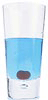

Nossos Elixires
Chá Verde Cooler
 Cheio de vitaminas e minerais, este elixir combina os benefícios saudáveis do chá verde com uma pitada de folhas de camomila e gengibre.
Cheio de vitaminas e minerais, este elixir combina os benefícios saudáveis do chá verde com uma pitada de folhas de camomila e gengibre.
Framboesa Geladinha

Combinando suco de framboesa com capim-limão, raspas de gelo e o fruto da roseira-brava, este drinque super gelado vai clarear e revigorar sua mente.
Elixir da Felicidade
 Essências de vacínio e cereja misturadas a uma base de chá de erva da flor do sabugueiro colocarão você em estado relaxado de felicidade rapidamente.
Essências de vacínio e cereja misturadas a uma base de chá de erva da flor do sabugueiro colocarão você em estado relaxado de felicidade rapidamente.
Explosão Anti-oxidante de Oxicoco
 Acorde para os sabores do oxicoco e hibiscos neste elixir rico em vitamina C.
Volte ao Bar
Acorde para os sabores do oxicoco e hibiscos neste elixir rico em vitamina C.
Volte ao Bar